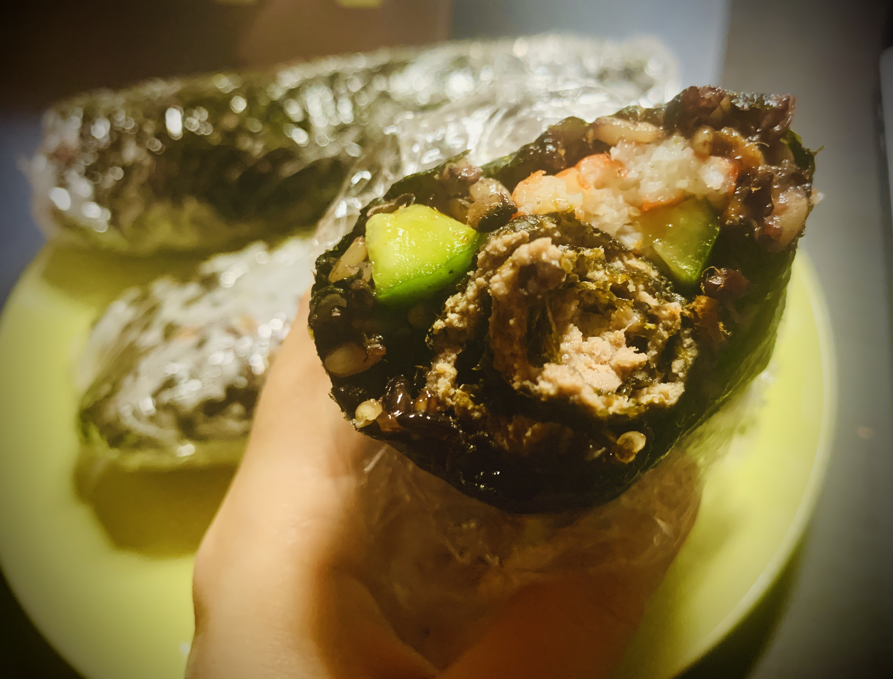

Vicky's Recipes
Beef Sushi Roll

Ingredients
- Rice
- Plastic wrap
- Vegetables
- Egg
- Ground beef
- Roasted seaweed
- Pork sung
Instructions
- First of all, make sure your rice at least an hour or two in advance so that it has time to cool to room temperature before assembling your rolls.
- Then, add the seasonings, eggs to the beef ground and mix well. spread a thin layer of beef ground over the nori . Put in the oven and bake for 20-30 mins.
- Spread a thin layer of rice over the nori and add the fillings, add your ingredients toward the center of the rice-covered nori. Don’t forget roll your beef sushi in and don't overpack it.
- Roll up the sushi.